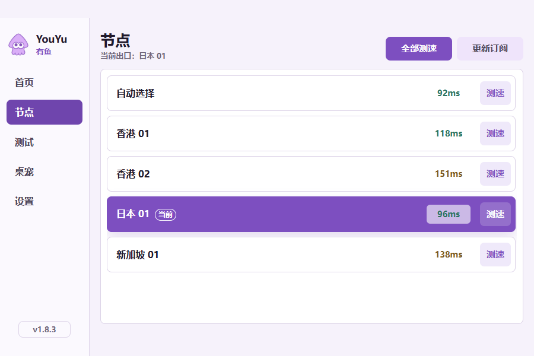
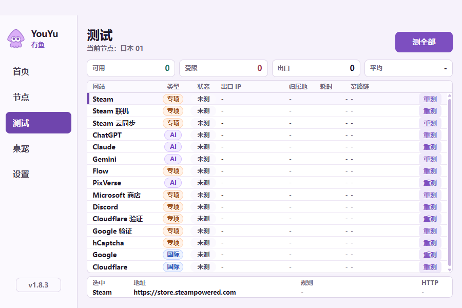
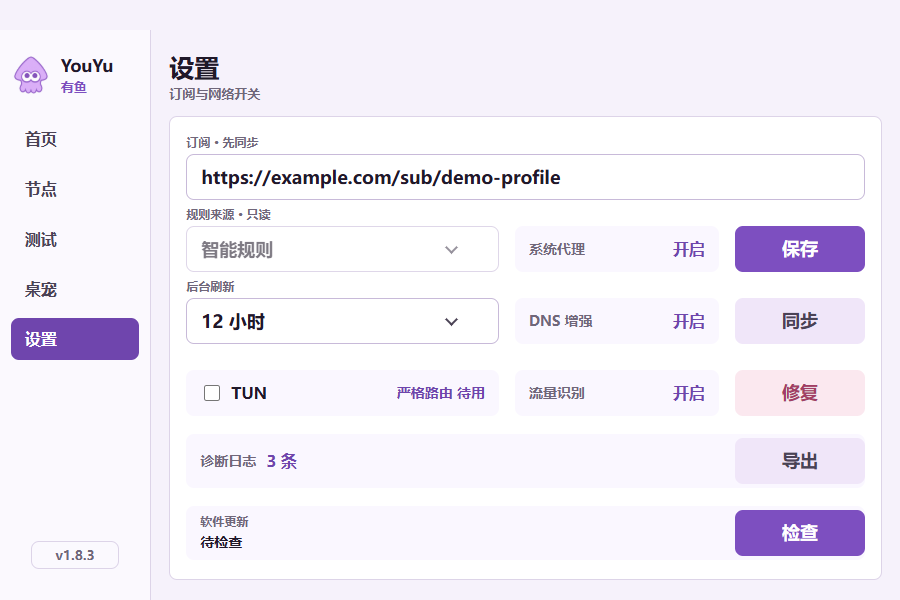

小白模式
一个主按钮完成代理启停，减少日常操作。
- 启动、连接、停止等状态有明确反馈
- 无需在多个页面之间切换
- 状态清晰反馈，不必先理解复杂参数
日常使用，一键启停就够了。需要更多掌控时，YouYu 的专业模式支持节点、规则与 TUN 管理，流量和连通性一处看清。
v1.8.3 · Windows 10 / 11 x64 · MIT 开源
公开安装包不内置订阅，请使用自己的订阅。

同一个客户端，按使用习惯选择操作方式。
一个主按钮完成代理启停，减少日常操作。
把节点选择、流量统计和连接诊断放在一起。
节点、测试、设置和桌宠分区清楚。点击图片可查看完整界面。

单节点或全部测速，按需切换；首页延迟同步更新，运行中持续检查健康状态。

Steam、AI 服务与常用站点共 15 项测试，汇总耗时、出口信息和实际策略链。

管理订阅、规则与 TUN；清理代理残留，导出脱敏诊断，检查和安装更新。
挥手、走动、贴边和睡眠，软件内支持 24 种状态。喜欢清爽桌面，也可选择无桌宠版。查看完整预览
界面使用安全演示数据，订阅、节点、流量与出口信息均为虚构示例。
当前版本 1.8.3，适用于 Windows 10 / 11 x64。两种版本都支持小白与专业模式，公开安装包不内置订阅。
运行安装包，完成管理员授权。
完成使用登记，在设置中保存自己的订阅。
日常用小白模式启停，需要时进入专业模式调整。